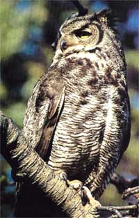
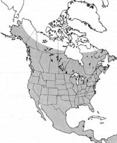
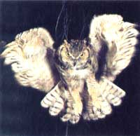

Recently I read that there are two kinds of people in this world: those who love cats, and those who don't. Well, yes, I suppose you could say that. But if we're going to generalize, then let's add that there are also two kinds of cats in this world: city kitties that keep mostly indoors and purr in their owners' laps, and semiferal country cats that prowl loose and unbelled, playfully destroying every bird and small animal they can lay claws on. The first kind is a heartwarming joy to its owner; the second can be a scourge to wildlife.
Unfortunately, the only feline I regularly come in contact with epitomizes the latter class: old Tom, a hefty white Manx belonging to a neighbor just down the mountain. Tom is a born hunter who, for several years, methodically attempted to consume every chipmunk, squirrel, rabbit kit and ground-nesting bird that crossed my little rural acreage or his own.
But poetic justice thrives in nature, and one evening last summer the hunter became the hunted. As told by Tom's owner-who happened to be outside puttering around and witnessed the drama unfold-Tom was out hunting, as usual, slinking ghostlike across a nearby meadow in the waning light. Just a normal work night for Tom the neighborhood terror. Then, suddenly and savagely, Tom became a flying feline, grasped firmly (and, one can assume, uncomfortably) about the head and neck by huge talons, jerked abruptly off the ground and hoisted skyward by a great horned owl. A few moments into its escape flight, the owl off-loaded the pussycat, then winged away into the sunset.
That much we know from eyewitness account.
To get the owl's side of the story, we'll have to be creative: Mr. Owl has just clocked in for the night shift when his sharp, searching eyes detect a light-hued form slipping through the evening shadows below. Recognizing the general shape, size and color of his favorite meal, the cottontail rabbit, Mr. Owl figures this to be his lucky night; he'll dine early, then retire to the deep dark woods to share a few good hoots with the boys. Getting right to work, Mr. Owl drops from cruising altitude in a swift and silent glide, striking his unwary prey with stunning force. "Heavy sucker," Mr. Owl grunts as he flaps away with what he supposes to be a trophy-class bunny.
But the rush of chill evening air streaming past the limp cat's airborne bod quickly revives him, and he commences twisting and jerking and generally clawing hell out of his unwanted ride. Mr. Owl, shocked and hurt, unaccustomed to having his food fight back, drops old Tom like an unfaithful lover and wings off into the night, asking himself aloud as he goes... "Whoo, who? "
Or some such. We know for certain only that a great horned owl swooped out of the evening sky, grabbed Tom, flapped away, then-20 or 30 feet high-dropped the struggling cat and disappeared.
Not long after, just across the valley from the Tom attack, the cat-loving owl (or one of his or her kin) struck again, taking another light-colored outdoor tabby. This time there were no witnesses, but the deep puncture wounds on the victim's head and chest, together with other bits of circumstantial evidence, seemed to spell great horned owl: The attack came after dark (fairly ruling out an eagle as the predator), and the attacker again dropped the goods when they began fighting back-apparently from no low altitude, since the cat's back was broken most terminally.
Though I admire and enjoy the company of birds, especially the big hunters, the raptors, I'm not what you'd call a full-fledged birder-more of a mammal man, actually. But those two owl-and-pussycat incidents, coming close together and near home as they did, piqued my curiosity and prompted me to launch an investigation of this shadowy eagle of the night, the great horned owl.
Anyone seriously interested in gaining the wisdom of the owl should begin at the beginning-with Hawks, Owls and Wildlife (Dover Publications, 1969), by the Craig-head brothers (yes, John and Frank of grizzly bear research fame). This scholarly work-a surprisingly good read-details the Craigheads' exhaustive field studies of owls and other birds of prey throughout the 1940s. The research was conducted primarily in the brothers' boyhood home of Superior Township, Michigan, but also in their later stamping grounds around Teton National Park, Wyoming. The Craigheads' work was the first in-depth field study of raptors, and remains one of the most extensive and revealing ever undertaken.
So what did the brothers learn? Well, they discovered that the great horned owl's home territory averages just under six square miles; that, however, the raptor's winter range encompasses only a portion of its home range; that the big bird is essentially nonmigratory; that the horned owl can and does hunt both day and night; that it's something of a bully who lords it over all other raptors in
its territory; that it nests earlier than any other bird in North America; that great homed owls don't build their own nests, but appropriate those built the previous season by other large birds, notably hawks and crows; that those nests which the big horny finds but doesn't adopt, it often destroys; that great homed owls prey on other raptors, both young and adults, especially at night when the day-hunters are snoozing; that horned owls play a major role in limiting crow populations; that, conversely, swarms of crows can pose a serious threat to nesting great horned owls and their chicks; that, in the Craigheads' study area, the typical mated pair of horned owls produced an average of three eggs but only 1.1 surviving chicks per year; that horned owlets leave their parents' territory to establish their own as soon as they're able to fend for themselves; and so on.
Interesting stuff, all.
Of course, in the three-plus decades since the Craigheads' pioneering studies were completed, other researchers have increased our knowledge of the horned owl tremendously. The high points of this information are now available to the amateur naturalist (according to my reckoning, that includes anyone who's interested in the mysteries of
nature) in the pages of such compressed but surprisingly comprehensive reference works as Roger Tory Peterson's A Field Guide to the Birds and A Field Guide to Western Birds.
Peterson supplies us with a feast of common but interesting details-such as the fact that the great horned owl's scientific name is Bubo virginianus, that it stands 18 to 25 inches tall, that it's the only large owl with "horns," or ear tufts (actually mere clumps of feathers that have absolutely nothing to do with hearing or horning), and that its voice is "a deep resonant hooting of three to eight hoots."
"A deep resonant hooting of three to eight hoots." I'd occasionally heard great horned owls hoot since I was a child, and in the years I'd lived here at the edge of the Rocky Mountain backcountry, I'd heard the hoodoo call at least a couple of nights a week.
I'd heard the great owls talking, but I'd never really listened. I decided to play a game, to perform a little field experiment: The next time I heard clearly the hooting of a horny, I would listen, and count, and consider, and perhaps even attempt to imitate.
A few evenings later, I was sitting outside on the porch enjoying the sunset in solitude while my wife and our fat black pup, Amigo go, were off on their evening stroll. It was just at the edge of dark when I heard the owl-not too far away, a half-mile or so, hooting it up from down by the big marsh that seems to be the center of owl activity hereabouts. I cupped my hands behind my ears to better hear the call, then counted the syllables and memorized the cadence. . . hoo-hu-hooo-hoo-hooo. Five syllables, with the first so very soft and low as to be almost inaudible. I listened awhile longer, then formed a megaphone with my hands and let fly with a facsimile reply.
OWLS
Which was a tremendous disappointment, for I discovered that-even with six feet and 160 pounds of body to put behind the effort -no way could I pitch my voice as low as the hoot of a bird that I knew could weigh no more than five pounds max.
But the horny wasn't so critical and answered at once. Encouraged, I waited a few seconds and hooted again. Again the owl answered, sounding somewhat closer. I hooted, the owl hooted back, closer even yet. It was then that Carolyn and Amigo emerged from the woods at the bottom of the drive and headed up toward the cabin. I stood to warn them to stop where they were and keep quiet, but too late, for just then a huge brownish bird glided in from the direction of the marsh, made a low pass over Amigo, climbed rapidly, stalled in a momentary hover, then grabbed a perch atop a nearby pine snag.
At a loss for what to do next-it was getting too dark for photographs, and my camera was in the cabin besides-I hooted again. This time, instead of answering with a hoot, the owl screeched: an angry, coarse sound somewhere between a scream and a hiss. Our visitor remained on the snag for perhaps a minute more, screeching each time I'd hoot, then glided down the hill just out of sight, parked in another tree and continued to screech in answer to my hoots.
I've been able to find no explantion, or even mention, of this eerie sound in the books I've consulted. However, a week or so later, Carolyn, out on another of her evening dog trots, spotted two horned owls perched in separate trees on opposite sides of the marsh, screeching at each other exactly as our visitor had scolded me. From those two experiences, we surmise that this weird screeching is a form of close-in communication, and either serves as a territorial proclamation (a caustic warning to interlopers), or has to do with mating.
After such exciting beginnings, I'm hooting in earnest these days.
The great horned owl is the only North American representative of the 12-species genus Bubo, and is closely related to the Eurasian eagle owl ( Bubo bubo ). The great horned owl ranges from Pacific to Atlantic throughout the Americas and from just south of the tundra regions of Alaska and Canada all the way down to southernmost South America. In the lower 48, the horned owl is generally a mottled brownish gray, with a lighter underside and a white throat patch -though it sometimes appears, from a distance at least, to be almost as uniformly white as its north-country counterpart, the snowy owl.
For me, the most fascinating feature of this mysterious bird is its remarkable physical adaptation to life as a winged predator: The great homed owl is a textbook example of the culmination of millions of years of natural selection.
Take, as one illuminating example, the great horny's optical equipment. To begin with, the owl's eyes are outrageously huge in relation to its body size-near the diameter of your peepers or mine, but deeper, more conical, providing increased lens and cornea area for greatly improved night vision. Researchers disagree wildly as to the exact light sensitivity of an owl's eyes, with estimates ranging from a low of 2.5 up to a high of 100 times superior to our own. But no matter the lack of scientific consensus; for all practical purposes, owls truly can "see in the dark." What's more, the owl's eyes are totally functional in the daytime as well, thanks to wide-ranging pupils that open and close according to light intensity, and a translucent nictitating membrane, or inner eyelid, that closes to protect the sensitive retina from extreme brightness.
OWLS
As with most predators, the owl's eyes face the front, an arrangement that provides the bird with humanlike binocular vision-an overlapping sight picture that facilitates depth perception. (When you earn your living by rocketing down from the heavens to seize small moving targets, it's right handy to be able to judge accurately when to pull out of your dive and extend your snatching gear.) What's more, the great homed owl can rotate its head an amazing 270°, allowing the big bird to remain essentially immobile while scanning its surroundings for prey.
But even more astonishing than the homed owl's vision is its hearing. Think of a satellite dish-a large, saucer-shaped receiver designed to catch incoming signals, then amplify and direct them to a centrally located receiver. Now, if you were to put a satellite dish on a-motor-driven ball-bearing mount that constantly rotated the dish through a scanning range of 270° or so, you'd have something approaching the owl's face. That large, rounded visage actually contains two receiver dishes, one around each eye. The ear openings-elongated vertical slits on either side of the skull-are positioned so as best to receive the sounds picked up, magnified and redirected by the facial disks.
There's more: The owl's ear openings are asymmetrical, with the left slit mounted lower and opening downward, while the right ear is a bit higher on the skull, opens slightly upward and is somewhat smaller than the left. With this arrangement, sounds are read by the owl's brain in something approaching stereo, allowing the hunter, by rotating its satellite-dish head, to pinpoint the direction and distance of a sound's origin.
And finally, complementing all of that, the owl's ears are particularly sensitive to high-frequency sounds... such as the squeaks uttered by typical prey animals: mice, voles, rats and chipmunks.
Among the great homed owl's favorite dinner guests are rabbits and hares, and its normal hunting technique-so scientific consensus would have it-is either to sit motionless on a high perch and watch and listen for movement, or to patrol low and slow over its hunting territory with all senses alert.
But there may well be more to it than mere patient waiting and methodical patrolling. In his eloquent Desert Solitaire (Simon and Schuster, 1968), the West's anarchic "non-naturalist," Edward Abbey, puts forth an original and compelling theory for a considerably more imaginative homed owl hunting caper:
"I am not alone. From the vicinity of Balanced Rock comes the cry of the great horned owl. Suppertime, for the owl. The mice, squirrels, gophers, rabbits know what I mean. What is he up to? Rather than hunt for his supper the owl seems to be calling his supper to come to him. He calls again and again, always from the same place, not moving, in a voice which seems to come from not one spot alone but-anywhere. A war of nerves.
"His nervous, timorous prey, terribly insecure, hear that cry and tremble. Where exactly is the owl? Perhaps the next shrub, the next rock, would offer better concealment than this. They hesitate. The great horned owl cries again and a rabbit breaks, dashes for what might be a better place, revealing his position. Quiet as a moth the owl swoops down."
When a prey animal is located-by whatever method-the owl glides down "quiet as a moth" until, at the critical moment, the predator suddenly flares its wings and hauls back its head to air-brake the descent, at the same time extending its feathered legs down and forward, talons agape, to snatch the unsuspecting meal, and often render it lifeless, in one fell swoop.
In addition to the mice, squirrels, gophers and rabbits Abbey notes, the great horned owl will also take weasels, snakes, lizards, frogs, birds (including an occasional chicken)... and, of course, errant kitties.
Which brings us back to poor old Tom cat.
Well, Tom miraculously survived his ordeal by flight that fateful evening, but he ain't been his old self since. Sure, he still hunts-best he can after having only partially recovered from a broken neck and a talon-punctured eardrum. These days old Tom has to do his stalking, chasing and pouncing with a gimped-up front end, spying out his prey with seriously crossed eyes. And to compound his war wounds, Tom's hunting abilities are further limited by his recently acquired habit of constantly looking up whenever he leaves the house. Which isn't nearly as often as it used to be.
|
 STEPHEN J. KRASEMANN/PETER ARNOLD. INC. |
 MAP BY DON OSBY |
 ALAN CAREY |